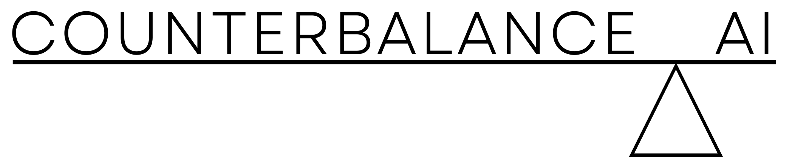
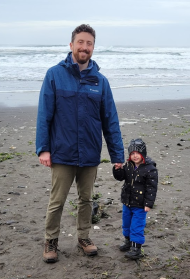
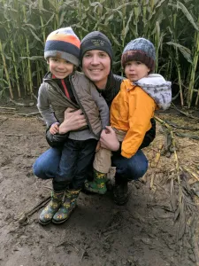

Advanced statistics and algorithm development to support human decisions – specializing in human services, law enforcement, and other critical infrastructure public agencies.
Fair machine learning and anti-bias processes to tackle the underlying bias present in all automated decision tools.
Trusted By
.png)
.png)
.png)
.png)
Our Specialties
Predictive Analytics
Leveraging historical data to forecast future trends and outcomes for informed decision-making.
Algorithmic Fairness
Developing and auditing algorithms to ensure equitable and unbiased results across all demographics.
Geospatial Analysis
Uncovering location-based insights and patterns to optimize resource allocation and planning.
Counterfactual Modeling
Developing and auditing algorithms to ensure equitable and unbiased results across all demographics.
Text Analytics
Leveraging historical data to forecast future trends and outcomes for informed decision-making.
Program Evaluation
Applying rigorous statistical methods to measure the effectiveness and impact of public programs.
Strategic Planning
Uncovering location-based insights and patterns to optimize resource allocation and planning.
Schedule Optimization
Applying rigorous statistical methods to measure the effectiveness and impact of public programs.
Meet the Team
Jamaal Green, Ph.D.
- Geographic Information Systems
- Spatial Analytics
- City & Regional Planning

Brian Glass, Ph.D.
- Machine Learning
- Natural Language Processing
- Cognitive Science

Jordan Purdy, Ph.D.
- Mathematical Statistics
- Algorithmic Fairness
- Program Evaluation